如果再看你一眼，是否还会有感觉！
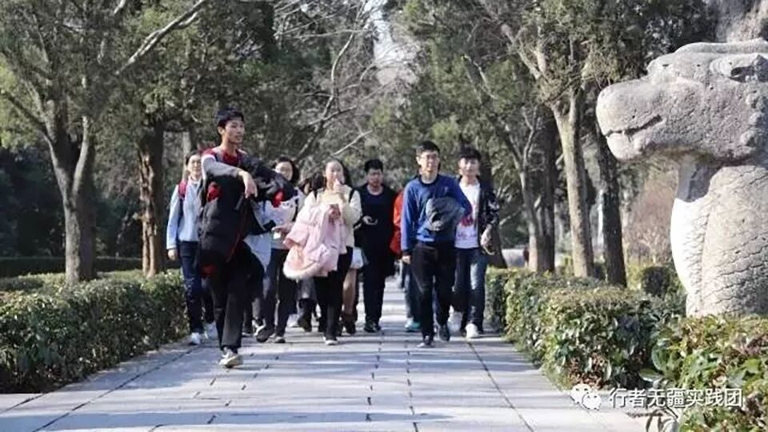
你是否还记得
曾经
只属于行者们的
那些故事
👇👇👇👇👇👇
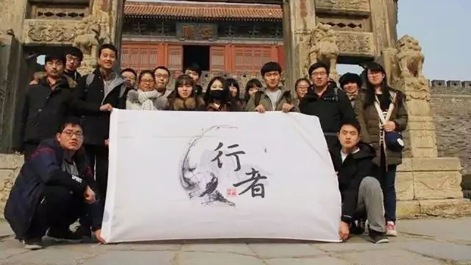
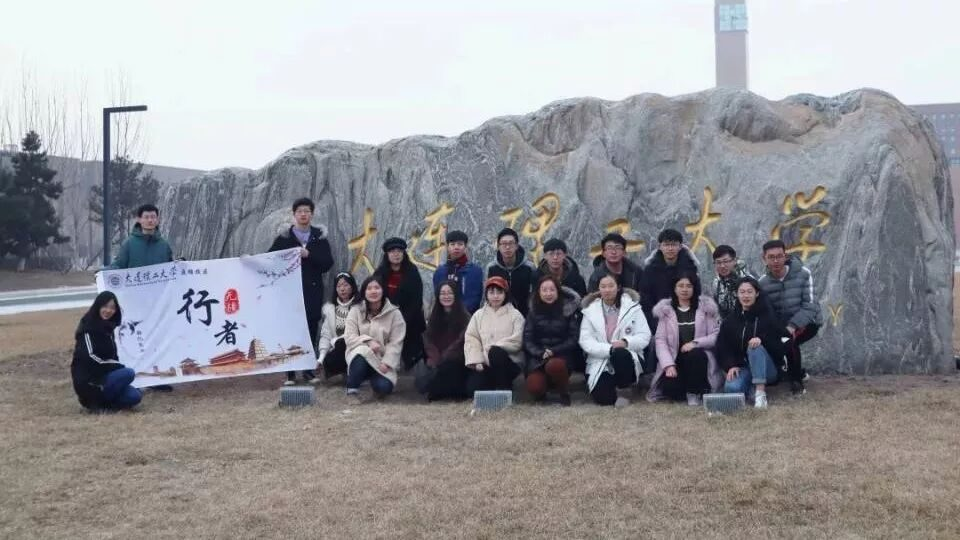
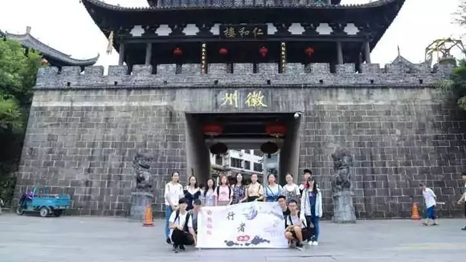
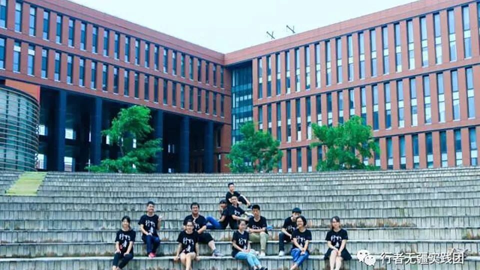
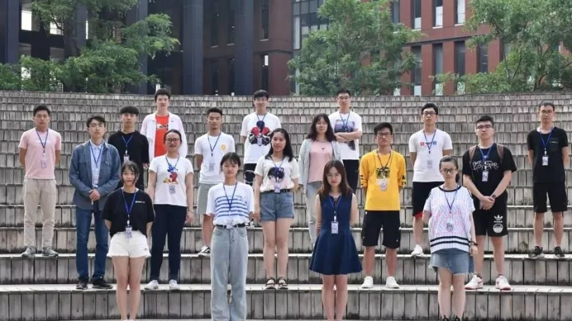
文溯齐鲁
知遇中原
致旅吴越
拾遗皖徽
韶忆长安
源洄渝州


这不禁让我们想起了
偏偏秉烛夜游
午夜星辰 似奔走之友
爱你每个结痂伤口
。。。。。。
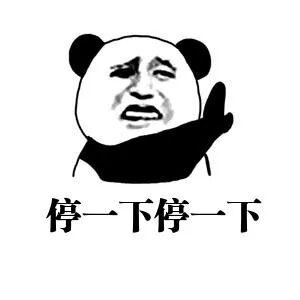
别唱了
冷静一下
干正事啦
听说第七期行者无疆
迎来了一群
无法用语言来形容的
帅 哥 靓 女
😍😍😍😍😍
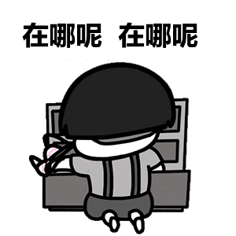
别着急
（维多利亚）盘锦校区分场
马上开始
show time

文字组
黄玲
无人做你的光芒
就自己照亮前方
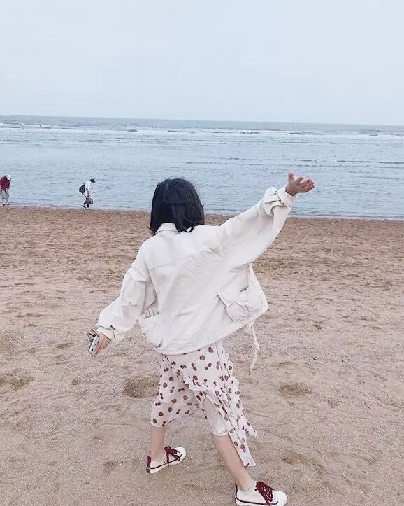
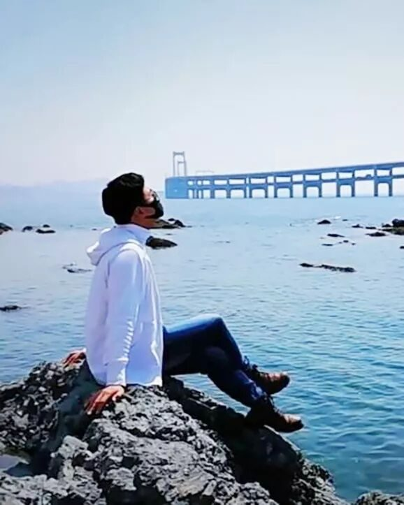
文字组
胡至鸿
青山瘦笔
不如一程共你
文字组
苏亚男
一点浩然气
千里快哉风
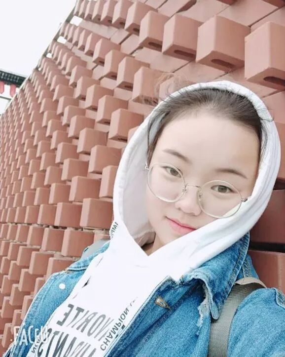
文字组
王姿然
希望微笑与好运
撞个满怀
宣传组
康艳虎
做最好的自己
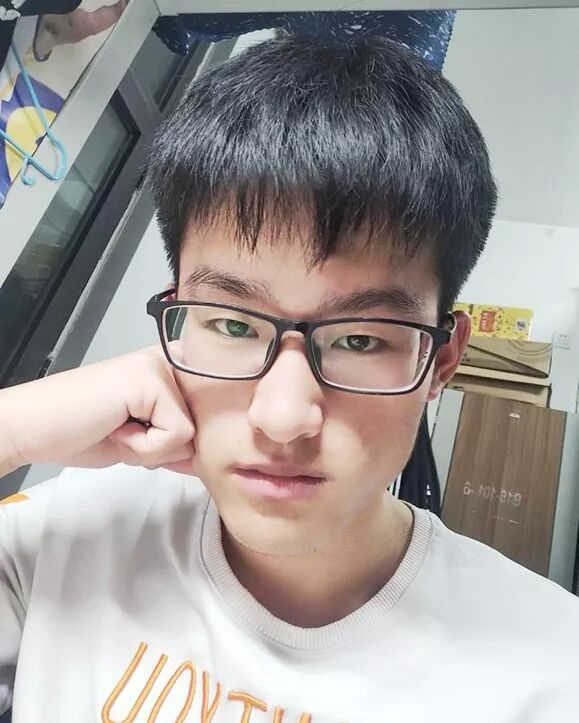
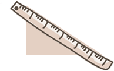
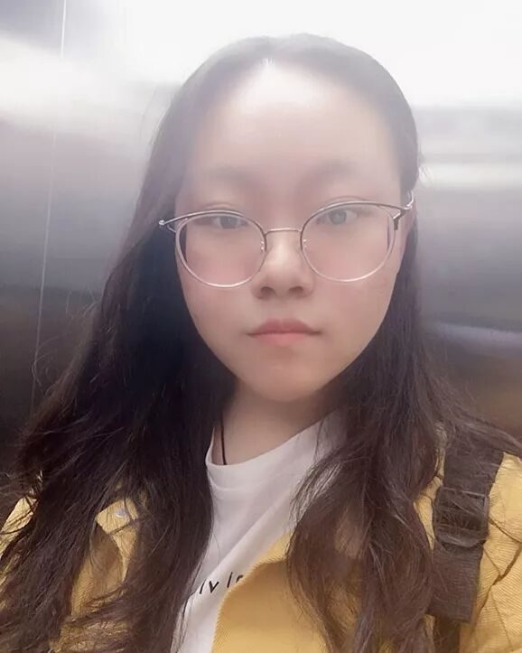
宣传组
张清雅
纸上得来终觉浅
绝知此事要躬行
宣传组
吕丰元
心有猛虎
细嗅蔷薇
调研组
陈子健
一个人行走的范围
就是他的世界
调研组
王小玉
我想踩碎迷茫
奔向遥远山河

调研组
王婧霖
不惧未来
不念 过往
外联组
张锐
我像一个拾荒者
收集你的过往
慢慢变成时间的陈酿
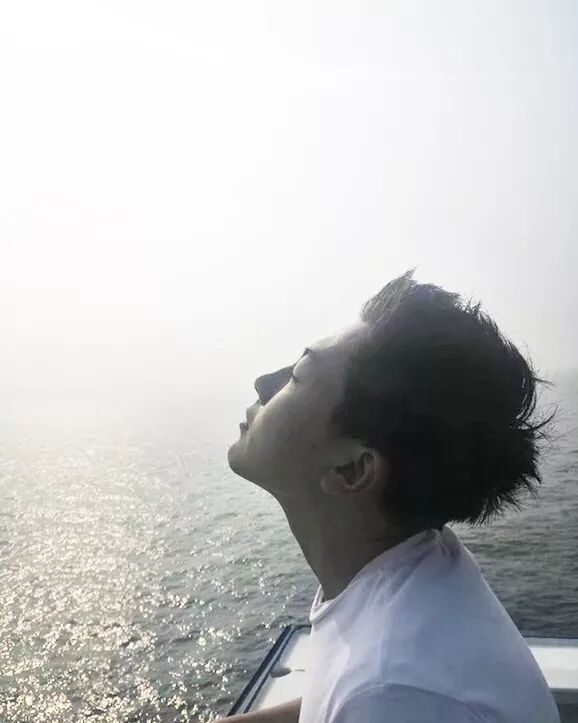
外联组
付媛
纵有疾风起
人生不言弃
采访组
陶奇
借我温软的鲁莽
和玩笑的庄严
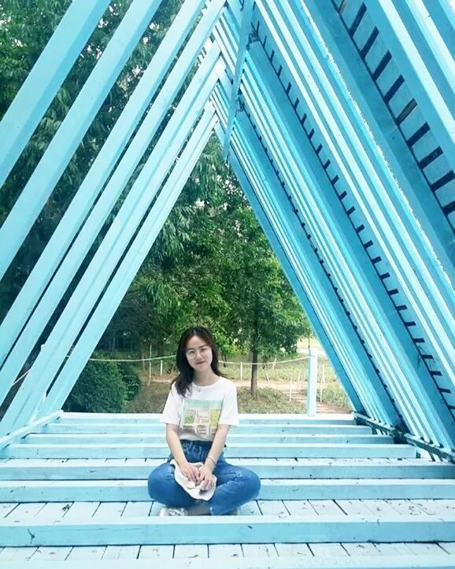
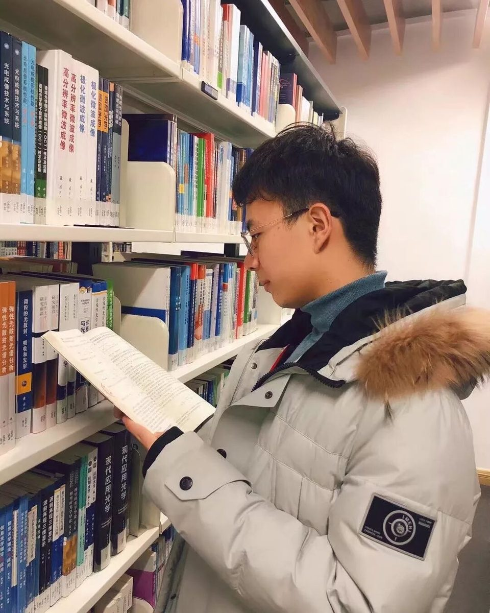
采访组
宋瑶康
热爱工作，热爱生活,
虚心若渴，砥砺前行。
陈辉
世界很大
行者依旧
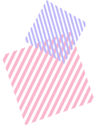
美工组
王是
爱国家
爱集体
爱生活
财务组
江新林
已开始
便一往无前
后勤组
米鑫
海纳百川
自强不息
新一期的行者无疆
将前往湖湘文化所在地
长沙
更多文化调研的故事
更多行者的足迹
更多发自内心的行者感悟
更好的行者
在等着我们
来源 | 行者无疆实践团
文字 | 行者无疆实践团
排版 | 康艳虎
审核 | 段智然 康艳虎
行者无疆实践团
QQ：2758025831

随行者一起认识世界
长按二维码